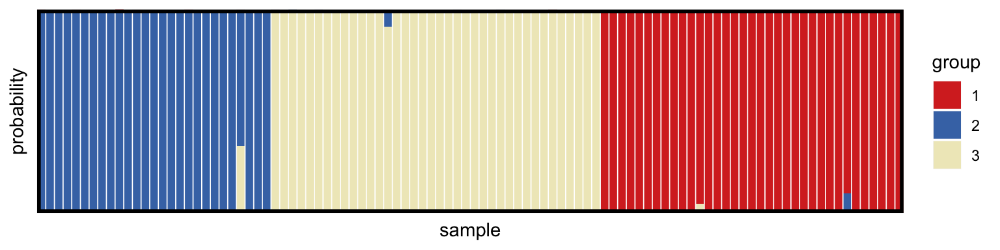
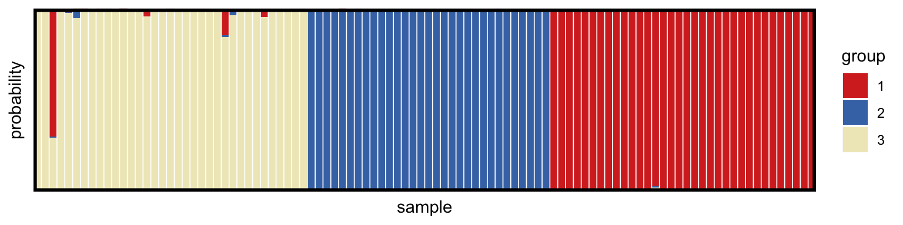
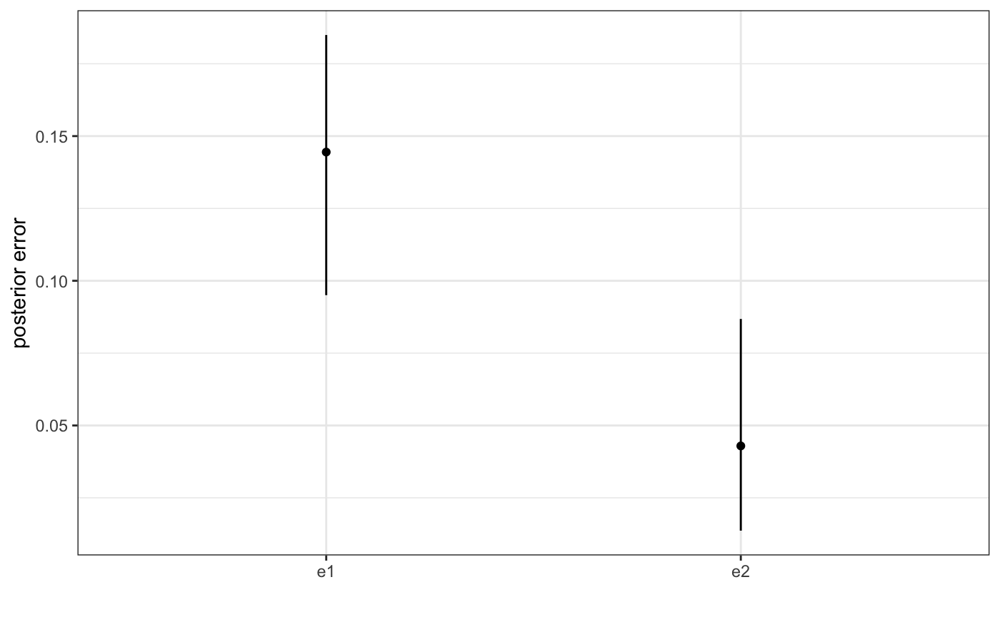

Tutorial 2: more realistic data and priors
Bob Verity
2018-09-17
complex-priors.RmdThis vignette demonstrates the use of more complex priors, which can add realism to the model but also tend to slow down the MCMC. It covers:
- different types of prior on COI
- more realistic priors on allele frequencies
- dealing with missing data and errors
This vignette follows on from the previous tutorial - or you can pick up here by running these lines:
# load output of previous tutorial
mysim <- malecot_file("tutorial1_mysim.rds")
myproj <- malecot_file("tutorial1_myproj.rds")More complex priors on COI
The previous model assumed a uniform prior on COI. This tends to be too permissive for real data as it gives considerable weight to high COIS and can therefore lead to over-estimation. There are two alternative priors implemented in MALECOT - the Poisson distribution and the negative binomial distribution.
The Poisson distribution assumes that COIs are clustered around a mean value. It is what we would expect if all individuals in the population were becoming infected and clearing infections at the same constant rate. The negative binomial distribution can be thought of as an over-dispersed Poisson distribution (i.e. it allows for a greater spread of values around the mean). It more closely reflects a situation where there is heterogeneity in exposure, meaning some individuals tend to be heavily infected and some only lightly infected. Note that whaterver prior we choose, COIs will still be truncated at COI_max.
The simulated data were generated from a Poisson distribution, and so we could use this prior to exactly match the inference model to the simulated data. However, in reality we will not have this luxury, and so here we will use a negative binomial prior. We can use the parameter COI_dispersion to set the level of over-dispersion compared to the Poisson distribution - for example, a value of 2 means the prior variance will be twice that of the Poisson distribution. The argument COI_mean = TRUE tells the model that we want to estimate the mean COI for each subpopulation, rather than using a set value.
In some cases we may want to specify the COI of certain samples manually - for example if we have used other programs to estimate the COI using different methods. This can be accommodated using the COI_manual argument, which takes a vector of length equal to the number of samples. Values of -1 indicate that the COI should be estimated, while positive values indicate that the COI should be fixed at that value. In this example we will assume that we know the true COIs of the last 10 samples.
# define some COIs manually
known_COI <- rep(-1,100)
known_COI[91:100] <- mysim$true_m[91:100]
# create new parameter set
myproj <- new_set(myproj, name = "nb model", COI_model = "nb", COI_max = 20,
COI_manual = known_COI, estimate_COI_mean = TRUE, COI_dispersion = 2,
estimate_error = FALSE, e1 = 0.0, e2 = 0.0)
myproj## DATA:
## data format = biallelic
## samples = 100
## loci = 24
## pops = 3
## missing data = 0 of 2400 gene copies (0%)
##
## PARAMETER SETS:
## SET1: uniform model
## * SET2: nb model
##
## ACTIVE SET: SET2
## lambda = 1
## COI model = nb
## COI max = 20
## COI specified manually for 10 samples
## estimate COI mean = TRUE
## COI dispersion = 2
## estimate error = FALSE
## e1 = 0
## e2 = 0As before, we run the MCMC using the run_mcmc() command:
myproj <- run_mcmc(myproj, K = 3, burnin = 1e4, converge_test = 1e2,
samples = 1e3, pb_markdown = TRUE)## Running MCMC for K = 3
## Burn-in phase
##
|
|=================================================================| 100%
## converged within 100 iterations
## Sampling phase
##
|
|=================================================================| 100%
## completed in 0.364835 seconds
##
## Processing results## Total run-time: 0.87 secondsAs before, we need to check that we are happy with the behaviour of our MCMC by looking at GTI paths, trace plots, and any other useful diagnostics. Assuming everything looks OK, we can go ahead and produce the structure and posterior COI plots:
# structure plot
plot_qmatrix(myproj, K = 3, divide_ind_on = TRUE)
# plot posterior COIs
posterior_m <- plot_m_quantiles(myproj, K = 3)
# overlay true values
library(ggplot2)
posterior_m <- posterior_m + geom_point(aes(x = 1:100, y = mysim$true_m), col = "red", shape = 4)
posterior_m
Notice that the 95% credible intervals in this plot are tighter than in the previous tutorial. This is because our prior now assumes that COIs are clustered around a mean value for each subpopulation. Notice also that the final 10 samples have their COI fixed at the correct value, as specified by the COI_manual argument.
Next we can look at the estimated mean COI for each of the subpopulations:
plot_COI_mean_quantiles(myproj, K = 3)
Recall that the data were simulated from three subpopulations with true mean COIs of 1.2, 2, and 3 respectively. The model appears to have estimated roughly the same values, although in a different order. We can understand the ordering issue by looking at the structure plot above. In the structure plot, groupings read from left to right go 2, then 3, then 1; the reason being that MALECOT chooses groupings to make outputs as similar as possible over different values of K. If we read the mean COI estimates in this order (2,3,1) we can see that the model has indeed estimated the correct values.
Missing data and errors
We do not always want to assume that we have zero error in our data. Often true homozygotes will be miscalled as heterozygotes (error 1), and true heterozygotes will be miscalled as homozygotes (error 2). The probabilities of these two types of error can be specified in the model using the arguments e1 and e2. We can either use fixed values, or these error probabilities can be estimated by setting estimate_error = TRUE, in which case a uniform prior is assumed ranging from 0 to e1_max for e1, and 0 to e2_max for e2. It is recommended to use sensible values for e1_max and e2_max (for example values of 1.0 are usually inappropriate as we do not expect all of our data to be mistakes).
Let us simulate some data with errors to test the model in a more challenging setting. We will assume that artificial heterozygotes occur with probability 0.1, and artificial homozygotes with probability 0.05. We will also assume that 20% of the data is missing, and hence encoded as -9.
mysim_errors <- sim_data(n = 100, L = 24, K = 3, e1 = 0.1, e2 = 0.05, prop_missing = 0.2)Next we will create a new project and bind the new data:
myproj_errors <- malecot_project()
myproj_errors <- bind_data_biallelic(myproj_errors, mysim_errors$data, ID_col = 1, pop_col = 2)
myproj_errors## DATA:
## data format = biallelic
## samples = 100
## loci = 24
## pops = 3
## missing data = 480 of 2400 gene copies (20%)
##
## PARAMETER SETS:
## (none defined)Looking at this output we can see that the project has correctly registered 20% of the data as missing.
For the model, we will assume a Poisson prior on the COI and a maximum value of 0.2 in both e1 and e2. We then run the MCMC as usual:
# create new parameter set
myproj_errors <- new_set(myproj_errors, name = "errors", COI_model = "poisson",
COI_max = 20, estimate_COI_mean = TRUE,
estimate_error = TRUE, e1_max = 0.2, e2_max = 0.2)
myproj_errors <- run_mcmc(myproj_errors, K = 3, burnin = 1e4, converge_test = 1e2,
samples = 1e3, pb_markdown = TRUE)## Running MCMC for K = 3
## Burn-in phase
##
|
|=================================================================| 100%
## converged within 200 iterations
## Sampling phase
##
|
|=================================================================| 100%
## completed in 0.408589 seconds
##
## Processing results## Total run-time: 0.71 secondsplot_e_quantiles(myproj_errors)## using K = 3 by default